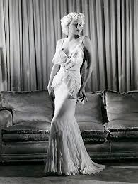

La moda degli anni '30 si caratterizzò per una silhouette più fluida e raffinata, con influenze dell'art déco e un ritorno alla femminilità, nonostante il contesto della Grande Depressione. **Per le donne**: - Abiti eleganti e aderenti** con scollature a V, spesso a tubino o con gonne lunghe e fluide. - Linee morbide e silhouette a "A"**, accentuate da spalle leggermente imbottite. - Pantaloni e abiti più casual venivano adottati anche per il giorno. - Cappelli e acconciature ondulate** erano dettagli distintivi. - I colori erano sobri, con nero, blu e beige, ma le tonalità più ricche dominavano per la sera. **Per gli uomini**: - Abiti a tre pezzi** con giacca, panciotto e pantaloni ampi. - Pantaloni larghi** (zoot suit) erano popolari nelle subculture. - Camicie bianche e cravatte eleganti**, con cappelli fedora come accessorio distintivo. La moda degli anni '30 rifletteva eleganza e discrezione, con un uso attento dei tessuti pregiati e dei dettagli decorativi, pur mantenendo un aspetto sobrio.
 https://www.belgioioso.it/vintage/moda-anni-30/#:~:text=Caratteristiche%20Distintive%20della%20Moda%20Anni,leggeri%20come%20raso%20e%20chiffon.